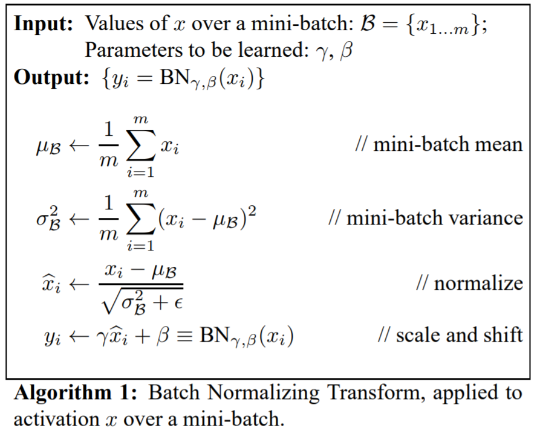
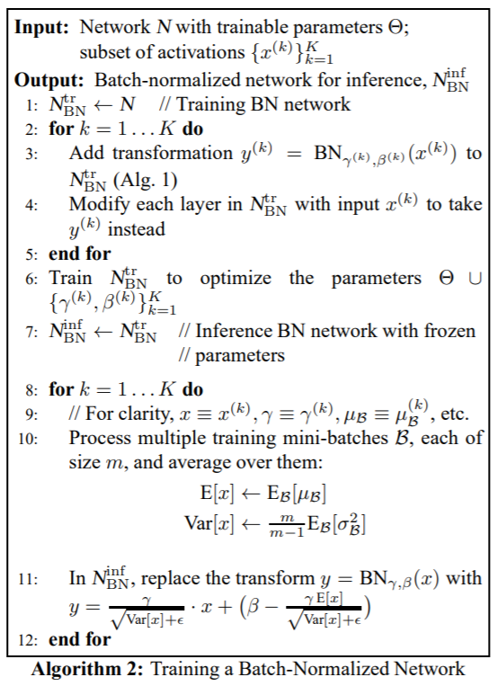

Batch Normalization 이란?
Paper : https://arxiv.org/abs/1502.03167
- Gradient Vanishing, Gradient Exploding 문제점
internal covariate shift: weight의 변화가 중첩되어 가중되는 크기 변화가 크다는 문제점careful initialization:Difficultsmall learning rate:Slow
위에 문제를 해결하기 위한 하나의 방법 입니다.
보통 internal covariate shift를 줄이기 위한 대표적인 방법은 각 layer의 입력에 whitening을 하는 것 입니다. 여기에서 whitening 이란 평균 0 분산 1로 바꾸어 주는 것(정규화)을 말합니다. 하지만 이러한 연산은 문제가 있습니다.
- bias의 영향이 무시 됩니다.
만약 연산을 한 뒤에 정규화하기 위해서 평균을 빼주는 경우 bias 의 영향이 사라지게 됩니다.(bias는 고정 스칼라 값이기 때문에 평균을 구해도 같은 값이 나옵니다.)
- 비선형성이 없어질 수 있습니다.
만약 sigmoid를 통과하는 경우 대부분의 입력값은 sigmoid의 중간 부분에 속합니다. sigmoid에서 중간은 선형이기 때문에 비선형성이 사라질 수 있다는 것입니다.
이러한 문제를 해결하기 위해 batch Normalization이 나왔습니다.

- : mini-batch의 크기
- : mean
- : std
- : scale
- : shifts
- 는 학습 가능한 파라미터 입니다. 이것이 비선형성을 완화시키기 위한 파라미터 입니다.

배치 정규화는 학습 하는 경우에는 미니 배치의 평균과 분산을 구할 수 있지만 추론을 하는 경우는 미니 배치가 없기 때문에 학습 하는 동안 계산 된 이동 평균을 사용 합니다.
- 이동 평균 : 각 미니 배치 평균의 평균
- 이동 분산 : 각 미니 배치 분산의 평균 * m/(m-1) [Bessel’s Correction]
CNN의 경우 bias의 역할을 가 대신 하기 때문에 bias를 제거합니다. 그리고 컨볼루션 연산을 통해 출력되는 특징 맵으로 각 채널마다 평균과 분산을 계산하고 를 만듭니다. 즉, 채널의 개수 만큼 가 생겨납니다.
장점
- internal covariate shift 문제를 해결한다.
- learning rate를 크게 해도 된다.
- 신중하게 초기값을 정할 필요가 없다.
- dropout을 대체 할 수 있다.
batchnorm_layer.c
forward_batchnorm_layer
void forward_batchnorm_layer(layer l, network net)
{
if(l.type == BATCHNORM) copy_cpu(l.outputs*l.batch, net.input, 1, l.output, 1);
copy_cpu(l.outputs*l.batch, l.output, 1, l.x, 1);
if(net.train){
mean_cpu(l.output, l.batch, l.out_c, l.out_h*l.out_w, l.mean);
variance_cpu(l.output, l.mean, l.batch, l.out_c, l.out_h*l.out_w, l.variance);
scal_cpu(l.out_c, .99, l.rolling_mean, 1);
axpy_cpu(l.out_c, .01, l.mean, 1, l.rolling_mean, 1);
scal_cpu(l.out_c, .99, l.rolling_variance, 1);
axpy_cpu(l.out_c, .01, l.variance, 1, l.rolling_variance, 1);
normalize_cpu(l.output, l.mean, l.variance, l.batch, l.out_c, l.out_h*l.out_w);
copy_cpu(l.outputs*l.batch, l.output, 1, l.x_norm, 1);
} else {
normalize_cpu(l.output, l.rolling_mean, l.rolling_variance, l.batch, l.out_c, l.out_h*l.out_w);
}
scale_bias(l.output, l.scales, l.batch, l.out_c, l.out_h*l.out_w);
add_bias(l.output, l.biases, l.batch, l.out_c, l.out_h*l.out_w);
}
forward
mean = 각 channel에 대한 평균
variance = 각 channel에 대한 분산
rolling mean = rolling mean * 0.99
rolling mean = 0.01 * mean + rolling mean
rolling variance = rolling variance * 0.99
rolling variance = 0.01 * variance + rolling variance
정규화를 하고 x_norm에 값을 넣어줍니다.
x_norm의 scale()하고 shift() 합니다. 즉,
backward_batchnorm_layer
void backward_batchnorm_layer(layer l, network net)
{
if(!net.train){
l.mean = l.rolling_mean;
l.variance = l.rolling_variance;
}
backward_bias(l.bias_updates, l.delta, l.batch, l.out_c, l.out_w*l.out_h);
backward_scale_cpu(l.x_norm, l.delta, l.batch, l.out_c, l.out_w*l.out_h, l.scale_updates);
scale_bias(l.delta, l.scales, l.batch, l.out_c, l.out_h*l.out_w);
mean_delta_cpu(l.delta, l.variance, l.batch, l.out_c, l.out_w*l.out_h, l.mean_delta);
variance_delta_cpu(l.x, l.delta, l.mean, l.variance, l.batch, l.out_c, l.out_w*l.out_h, l.variance_delta);
normalize_delta_cpu(l.x, l.mean, l.variance, l.mean_delta, l.variance_delta, l.batch, l.out_c, l.out_w*l.out_h, l.delta);
if(l.type == BATCHNORM) copy_cpu(l.outputs*l.batch, l.delta, 1, net.delta, 1);
}
backward
에 대해 업데이트 할 값을 구합니다.
에 대해 업데이트 할 값을 구합니다.
정규화를 역전파 합니다.
make_batchnorm_layer
layer make_batchnorm_layer(int batch, int w, int h, int c)
{
fprintf(stderr, "Batch Normalization Layer: %d x %d x %d image\n", w,h,c);
layer l = {0};
l.type = BATCHNORM;
l.batch = batch;
l.h = l.out_h = h;
l.w = l.out_w = w;
l.c = l.out_c = c;
l.output = calloc(h * w * c * batch, sizeof(float));
l.delta = calloc(h * w * c * batch, sizeof(float));
l.inputs = w*h*c;
l.outputs = l.inputs;
l.scales = calloc(c, sizeof(float));
l.scale_updates = calloc(c, sizeof(float));
l.biases = calloc(c, sizeof(float));
l.bias_updates = calloc(c, sizeof(float));
int i;
for(i = 0; i < c; ++i){
l.scales[i] = 1;
}
l.mean = calloc(c, sizeof(float));
l.variance = calloc(c, sizeof(float));
l.rolling_mean = calloc(c, sizeof(float));
l.rolling_variance = calloc(c, sizeof(float));
l.forward = forward_batchnorm_layer;
l.backward = backward_batchnorm_layer;
return l;
}
make
backward_scale_cpu
void backward_scale_cpu(float *x_norm, float *delta, int batch, int n, int size, float *scale_updates)
{
int i,b,f;
for(f = 0; f < n; ++f){
float sum = 0;
for(b = 0; b < batch; ++b){
for(i = 0; i < size; ++i){
int index = i + size*(f + n*b);
sum += delta[index] * x_norm[index];
}
}
scale_updates[f] += sum;
}
}
- 에 대해서 업데이트 해야할 값을 저장합니다.
mean_delta_cpu
void mean_delta_cpu(float *delta, float *variance, int batch, int filters, int spatial, float *mean_delta)
{
int i,j,k;
for(i = 0; i < filters; ++i){
mean_delta[i] = 0;
for (j = 0; j < batch; ++j) {
for (k = 0; k < spatial; ++k) {
int index = j*filters*spatial + i*spatial + k;
mean_delta[i] += delta[index];
}
}
mean_delta[i] *= (-1./sqrt(variance[i] + .00001f));
}
}
- 정규화에 대해서 평균 식을 미분합니다.
variance_delta_cpu
void variance_delta_cpu(float *x, float *delta, float *mean, float *variance, int batch, int filters, int spatial, float *variance_delta)
{
int i,j,k;
for(i = 0; i < filters; ++i){
variance_delta[i] = 0;
for(j = 0; j < batch; ++j){
for(k = 0; k < spatial; ++k){
int index = j*filters*spatial + i*spatial + k;
variance_delta[i] += delta[index]*(x[index] - mean[i]);
}
}
variance_delta[i] *= -.5 * pow(variance[i] + .00001f, (float)(-3./2.));
}
}
- 정규화에 대해서 분산 식을 미분합니다.
normalize_delta_cpu
void normalize_delta_cpu(float *x, float *mean, float *variance, float *mean_delta, float *variance_delta, int batch, int filters, int spatial, float *delta)
{
int f, j, k;
for(j = 0; j < batch; ++j){
for(f = 0; f < filters; ++f){
for(k = 0; k < spatial; ++k){
int index = j*filters*spatial + f*spatial + k;
delta[index] = delta[index] * 1./(sqrt(variance[f] + .00001f)) + variance_delta[f] * 2. * (x[index] - mean[f]) / (spatial * batch) + mean_delta[f]/(spatial*batch);
}
}
}
}
- 정규화를 미분합니다.